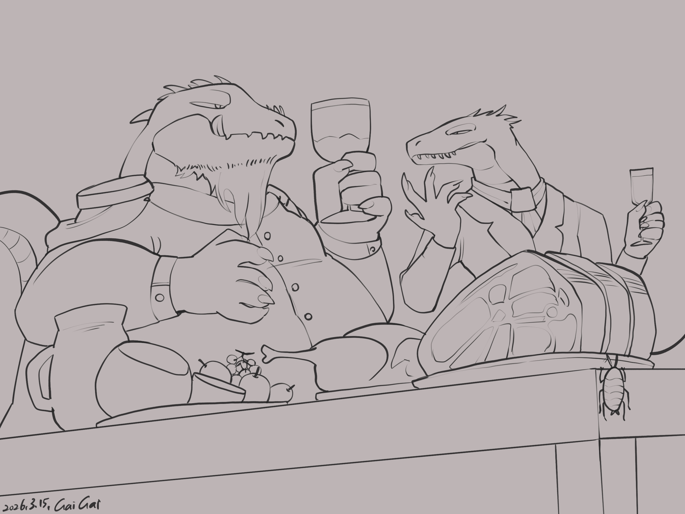

Chapter 2: Blue, Red and Brown
The Unacknowledged Child


The Unacknowledged Child
15049.05.20
拉比帶著冒險者們，往市鎮內熱鬧的酒館走去。他們在一樓找了空桌子坐下，點了餐。
雷亞問著關於他師父和父母相關的是，其他冒險者們則更好奇關於克萊芬，這座城市的事。
放眼望去，酒館內的酒客們穿著色彩繽紛，十分快活。約有八成的客人是蜥蜴人，剩下兩成各種種族都有，但沒有龍人。而在拉比的提示下，他們注意到了三種時常出現的穿著方式：有藍色的頭帶，有紅色的上衣或外套，還有土色的褲子。依照拉比的說法，克萊芬的政治派系主要分成三個陣營。
「新書院」以藍色為主色，是知識青年、學者為主的派系，崇尚民主、知識與理想。他們認為克萊芬應該決定自己的未來，並以學者皮尼歐教授為首。
「老樹盟」則是使用紅色，由老兵、軍閥，以及大型企業為主要成員。他們認為克萊芬應回歸萊斯諾，兩者有共同的歷史與根源。而如果要達成目標，動武也是可以的選擇。利斯達上校是他們現在的領導者。
最後是土色的「市民連線」，主要是商人、公會、一般平民的組成。比起前兩派較為極端的想法，他們不想躁進，認為「維持現狀」是最安穩、合適的。要是戰爭發生，連未來都不存在，還有什麼好談的？彭薩公會長是市民連線的首領。
毛毛眼看酒館門口有一間挺大的掛衣間，好奇地走了進去。滿掛的衣物遮擋了視線，但毛毛也清楚聽見掛衣間後方角落傳來小聲的交談聲。在外頭覺得好奇的羅羅也走了進來，馬上被毛毛暗示要小聲一點。羅羅製造了推開門，腳步踏出去的幻象後，便加入了毛毛，一起偷聽。
掛衣間的角落，兩個人正在交談著。明天有場克萊芬市長的選舉辯論會。這兩人正在討論一場刺殺的計畫，刺殺的對象，是新書院的領導者，也是這次市長選舉的候選人，皮尼歐教授。聽聞此事，儘管他們尚未決定要站在哪個派系，毛毛和羅羅都認為有必要讓皮尼歐教授知情。
悄悄離開掛衣間後，冒險者們也確認拉比支持的派系是新書院。毛毛小聲的告訴大家在掛衣間聽到的內容。毛毛和羅羅也有注意到離開的兩人，一人穿著紅色的外套，另一人則穿土色的褲子。很顯然，老樹盟和市民連線有所勾結。
大家一致認同需要有個更隱蔽的環境，於是拉比幫他們和酒館詢問了樓上的客房，預訂了一間通鋪，以及一間給羅羅使用的個人客房。大家上了樓，在通鋪討論，決定前往皮尼歐教授的辦公室拜訪。拉比叫喚了他的梟，先透過牠把拜訪的消息傳達給皮尼歐教授告知，然後大家便出發了。
學校內亮晃晃的辦公室矗立，拉比敲了敲門，兩名壯碩的維安人員開了門，確認身份後便讓拉比和冒險者們進來。皮尼歐教授和他的幕僚們正在辦公室內討論著明天的辯論會內容。皮尼歐教授站起了身，和大家致意，接著便毫不保留的施放了魔法「誠實之域」。
在來回的對話中，冒險者們只知道有老樹盟和市民連線的刺殺計劃，但方法不清楚，人是誰也說不出來。在毛毛的同意下，一名幕僚輕輕的將手放在他的額頭上，讀取他的記憶，但很快的，毛毛也感受到這人試圖讀取更深的記憶，而他抵抗失敗了。幕僚竊笑了一聲。
皮尼歐教授像冒險者們提議。他可以確保身份尷尬的雷亞在克萊芬的絕對安全，也可以提供獎金給冒險者們，但他希望冒險者們幫他一個忙：贏得後天的市長選舉。冒險者們在得到皮尼歐教授的同意下，使用了辦公室深處的獨立會議室進行討論。儘管大家沒把握現在決定自己的派系為何是不是正確的選擇，最終大家都同意，接受提案沒有壞處，於是便走出會議室，接受了皮尼歐教授的提案。
皮尼歐教授遞給每個冒險者一枚白金幣，並承諾他們事成之後再給他們各一枚。另外，他也告訴毛毛他先前在掛衣間偷取的兩個東西是什麼：一個，是被破壞的竊聽器，另一個，則是有些褪色，屬於新書院的徽章。皮尼歐教授提醒毛毛，幸好這個竊聽器早在毛毛拿到之前就已經被破壞了，否則後果不堪設想。
冒險者們在皮尼歐教授的送客下，離開了辦公室，並承諾在事成之前不公開他們合作的事蹟。他們雖然擔心皮尼歐教授明天辯論會的安危，但教授認為如果自己死去了，也是天命，而他之後，也會有其他新書院的人頂替上場，抱著他的理念為克萊芬賣命。
回到酒館，雷亞和拉比決定先到樓上休息，鑰、毛毛、羅羅和瑪莉貝爾則待在樓下和店小二攀談。他們了解到店小二是支持市民連線的人，但十分低調，只繍了一個補丁在他的衣服上來表示立場。店小二和他們推薦了當地的啤酒「克萊芬啤酒」，或簡稱「克啤」。
當雷亞經過樓上的一間包廂時，他聽見了裡面傳來的談話聲，似乎是和明天辯論會有關。他停了下來，決定變身成蟑螂，爬進去偷聽。拉比則待在門口待命。雷亞進到包廂內，一整桌的大菜，卻只有兩位並肩而坐的男子：一名身穿紅色軍裝，上面別有各類徽章，顢頇的老年灰髮蜥蜴人，和一名體格較瘦，但一臉奸邪，身穿土色精緻長袍的中年蜥蜴人。仔細一聽，這兩人對明天的「刺殺計劃」十分清楚。雷亞趕緊爬出門外，和拉比溝通。按照雷亞的描述，拉比很有把握這兩人就是老樹盟的利斯達上校，以及市民連線的彭薩公會長。
拉比聽見包廂裡頭傳來腳步聲，趕緊抓起雷亞，朝著他們的房間門口走去。一回頭，他看見酒醉的利斯達上校扶著牆，準備走向樓梯下樓去。在確認利斯達上校離開視線後，拉比回到門口，雷亞則試圖再回到包廂內。基於好奇，拉比小心翼翼的推開門縫，但看不清楚，於是他將門慢慢推開。「砰。」他聽見彭薩公會長輕輕說了一聲，一聲沉重的悶響，然後拉比胸口流出了血。他用力壓住傷口，坐臥在地上往後退。彭薩公會長走了出來，用力踩在拉比的胸膛上。「藍色垃圾雜碎。」他輕聲說道，然後朝拉比臉上吐了口口水，便走下樓了。
樓下，冒險者們和店小二聊得正盡興，鑰也得知店小二的名字為胡里恩。這時，沉重的腳步聲從階梯上走下。冒險者們看見利斯達上校扶著牆壁走下樓。鑰喊著想請利斯達上校喝杯啤酒，利斯達上校走了過來，抓起桌上新上的啤酒，朝著店門口走去，邊走邊喝，喝完後便把酒杯往後丟在地上，砸碎了也不管，打著飽嗝推開門便出去了。
「砰」的聲響也傳到了一樓。冒險者們吃驚，向胡里歐詢問。他表示那是像火一樣的魔法，是某種機械裝置。依他所知，只有貴族或極高權勢的人才有那種東西，整個克萊芬，大概最多也兩個那樣的裝置而已。冒險者們好奇店小二不用上去看看嗎？如果有這個聲響，是不是有人有狀況了，也許需要救助。胡里歐則說只要老闆沒特別說，他會裝作沒事。彭薩公會長走了下來，尖銳的眼神東看西看，然後朝地上吐了口口水，走出了門外。